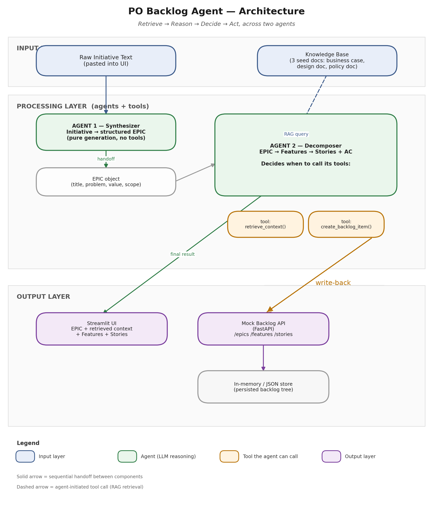
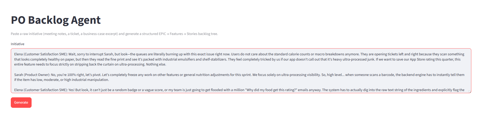
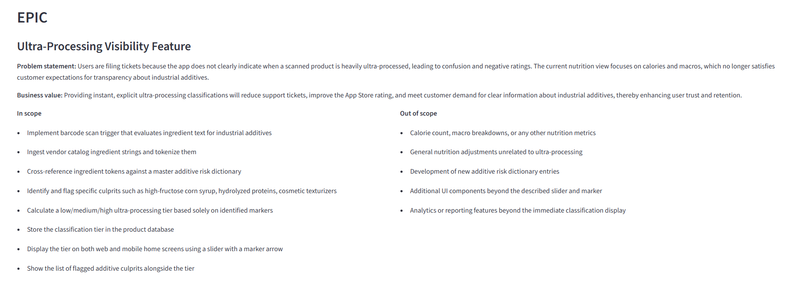
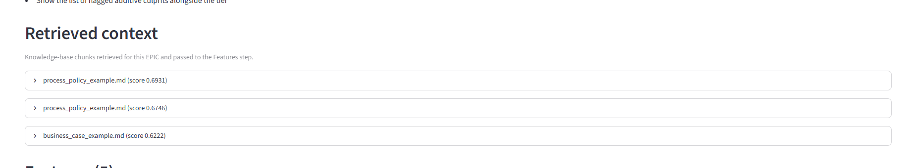
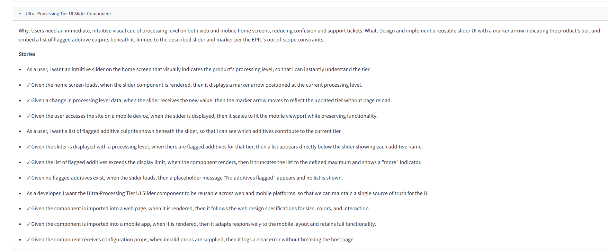
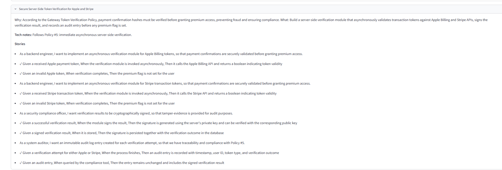

PO Backlog Agent: From Raw Initiative to Structured Backlog
Independent build · Two-agent RAG system · Live on Streamlit
Overview
PO Backlog Agent is a working sequential-agent system that takes a messy, unstructured initiative (a chunk of meeting notes, a ticket, a business-case excerpt) and turns it into a structured EPIC, then grounds itself in a small knowledge base to decompose that EPIC into Features and Stories with acceptance criteria. I built it as a proof of concept to learn agentic architecture hands-on: retrieval-augmented generation, tool calling, sequential-agent coordination, and structured output, applied to a job I actually do.
The Problem
Turning a roadmap initiative into a detailed backlog is slow, manual work: synthesising scattered inputs into an EPIC, digging through internal knowledge bases for context, then decomposing the result into Features and Stories with acceptance criteria. Two of those steps, the synthesis and the decomposition, are a good fit for an agent. The rest (running the meeting, the SME conversations, the technical design, the sign-off) genuinely needs human judgment and is deliberately left out.
Architecture
The system runs a full Retrieve, Reason, Decide, Act loop across two agents with distinct responsibilities and toolsets:
- Agent 1, Synthesiser. Takes the raw initiative text and drafts a structured EPIC (title, problem statement, business value, in and out of scope). Pure generation, no tools, grounded strictly in the input.
- Agent 2, Decomposer. Retrieves the top relevant chunks from the knowledge base via RAG, decomposes the EPIC into 2 to 5 Features, then each Feature into Stories with Given/When/Then acceptance criteria, and optionally writes the whole tree back to a mock backlog API through a tool call.
Two agents rather than one keeps each prompt focused and lets every stage be inspected and demoed on its own. Agent 2's retrieval and write-back are exposed as function-calling tools, so the agent decides when to call them rather than the orchestration code forcing a fixed sequence.

Walkthrough
The live app runs the whole flow from a single pasted paragraph in about 15 to 30 seconds, showing each stage so the grounding is inspectable rather than hidden.





What It Demonstrates
- Retrieval-augmented generation grounded in a real, if small, knowledge base, with retrieval visible in the UI and verified by swapping the context and watching the Features change
- Sequential-agent coordination with a clean handoff between a synthesis agent and a decomposition agent
- Tool and function calling for both context retrieval and write-back to an API
- Structured output generation with validation, so EPIC, Feature and Story shapes stay predictable and parseable
- Deliberate scoping: recognising which steps of a real workflow suit agentic automation and which need human judgment
Deliberately Human-Only
An automation-fit analysis for the project drew a hard line around the steps that stay human, by design rather than by limitation:
- Running the initiative meeting and the SME conversations that surface the real intent
- High-level and low-level technical design
- Any sign-off, approval, or governance workflow, and version tracking of requirements after sign-off
- Multi-turn conversational refinement, a single-pass draft per stage is enough for the POC
- Real JIRA, Confluence, or AHA integration, the write-back target is a mock FastAPI service
Tech Stack
- Reasoning and tool calling: Groq API (LLaMA 3.3 70B), OpenAI-compatible, free tier
- Embeddings: local sentence-transformers (all-MiniLM-L6-v2), no API key or rate limit
- Vector store: Chroma, local and file-backed
- Mock backlog API: FastAPI with four endpoints (create epic, feature, story, and read the nested tree)
- UI: Streamlit
Everything except the LLM call itself runs locally, and there are no paid dependencies. That was a deliberate resilience choice against third-party quota changes, not just a cost one.
What I Learned
The hardest part was not the wiring, it was the scoping: being honest about which parts of my own backlog workflow an agent should touch and which it should stay out of. Building it also changed how I think about RAG in a product: retrieval has to be inspectable and testable, not assumed, so I surfaced the retrieved chunks in the UI and checked that changing them actually changed the output. And splitting the work across two small agents with narrow toolsets, rather than one large prompt, made each stage far easier to reason about, debug, and show.